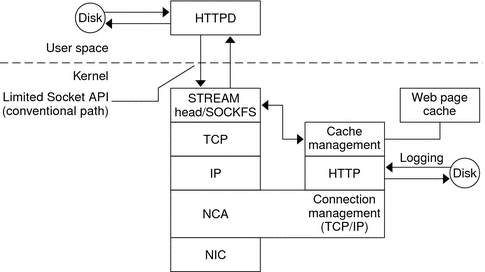

|
|||||||||||||||||||||||||||||||
|
Part I Network Services Topics Network Cache and Accelerator (Overview) Web Servers Using the Secure Sockets Layer Protocol Managing Web Cache Servers (Task Map) Administering the Caching of Web Pages (Tasks) How to Enable Caching of Web Pages How to Disable Caching of Web Pages How to Enable or Disable NCA Logging How to Add a New Port to the NCA Service How to Configure an Apache 2.0 Web Server to Use the SSL Kernel Proxy How to Configure a Sun Java System Web Server to Use the SSL Kernel Proxy Part II Accessing Network File Systems Topics 4. Managing Network File Systems (Overview) 5. Network File System Administration (Tasks) 6. Accessing Network File Systems (Reference) 8. Planning and Enabling SLP (Tasks) 10. Incorporating Legacy Services Part V Serial Networking Topics 15. Solaris PPP 4.0 (Overview) 16. Planning for the PPP Link (Tasks) 17. Setting Up a Dial-up PPP Link (Tasks) 18. Setting Up a Leased-Line PPP Link (Tasks) 19. Setting Up PPP Authentication (Tasks) 20. Setting Up a PPPoE Tunnel (Tasks) 21. Fixing Common PPP Problems (Tasks) 22. Solaris PPP 4.0 (Reference) 23. Migrating From Asynchronous Solaris PPP to Solaris PPP 4.0 (Tasks) 25. Administering UUCP (Tasks) Part VI Working With Remote Systems Topics 27. Working With Remote Systems (Overview) 28. Administering the FTP Server (Tasks) 29. Accessing Remote Systems (Tasks) Part VII Monitoring Network Services Topics |
Caching Web Pages (Reference)The following sections cover the files and the components that are needed to use NCA. Also, specifics about how NCA interacts with the web server are included. NCA FilesYou need several files to support the NCA feature. Many of these files are ASCII, but some of the files are binary. The following table lists all of the files. Table 2-1 NCA Files
NCA ArchitectureThe NCA feature includes the following components.
The kernel module ncakmod maintains the cache of web pages in system memory. The module communicates with a web server, httpd, through a sockets interface. The family type is PF_NCA. The kernel module also provides a logging facility that logs all HTTP cache hits. NCA logging writes HTTP data to the disk in binary format. NCA provides a conversion utility for converting binary log files to common log format (CLF). The following figure shows the flow of data for the conventional path and the path that is used when NCA is enabled. Figure 2-1 Data Flow With the NCA ServiceNCA to Httpd Request FlowThe following list shows the request flow between the client and the web server.
|
||||||||||||||||||||||||||||||
|